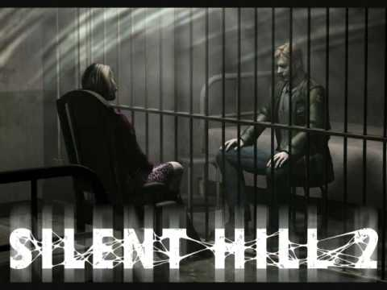
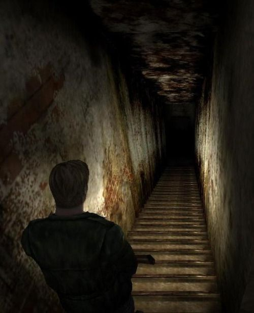

Silent Hill 2
| It's almost impossible to think about the survival-horror landscape without mentioning Resident Evil, so, I'll make this quick. Nintendo may have snagged the Resident Evil series for the next five years or so, but it's really no worry. Why? Because of Silent Hill 2. Thankfully, Konami has emerged from a long, dark slumber with the sequel to its first creepy, horror-filled adventure, and it's an experience that, excuse the Chaucerian, is sure to freak the crap out of you. With a flexible camera system that attempts to solve the stagnant fixed shots that have helped to define survival-horror games, a set of unstable, non-trustworthy characters, an incredible atmosphere, and a slow, creepy haunt of a story that grows on you like an evil mold, Silent Hill 2 is just the ticket for gamers ready to get good and scared. Silent Hill 2 doesn't break any molds or revolutionize the survival-horror genre in any particular way, but it tells a good, surreal story that's strangely heartbreaking, even a tad depressing, and keeps you guessing all the way to the end. The control scheme doesn't get in the way of the fun, and the gritty, claustrophobic, visual style is enticing and effective. And the fog, well, it's thick as pea soup, there's lots of it, and now it's purposely there, rather than merely to hide the draw-in. |  |
Story
Although Silent Hill 2 takes place in the familiar town of Silent Hill, the cast of characters is different, making it a sequel only in name, not in effect. Players find themselves placed in the role of one James Sunderland, a lonely, depressed man who was once happily married. His former wife, Mary, died three years ago to a terrible disease, and ever since, James hasn't been able to pull it together. Then one day, James receives a letter, signed by his "dead" wife Mary, pleading for him to meet with him in the town of Silent Hill. It reads, "Silent Hill, our sanctuary of memories...I will be waiting for you there." Disturbed, perplexed, and intrigued, James lets his emotions decide against logic, and drives to their former place of memories, Silent Hill. Naturally, a letter from the dead can only mean one thing, trouble. And James is headed straight for it. It's kind of subtle when you pass through the first major area, a cemetery and the fog is so thick, you can barely see which way you're going. But the point slowly seeps in, you're on a long, wild goose chase and the few people who are around can barely help you, let alone help themselves. For me to tell the rest of the story would be to spoil the game, so I'll just leave it there.Still, Roving Cameras
|  | Within the survival-horror genre, cinematic camera angles have become a "fixture" of sorts that serve to create a genuine mood or feeling. Konami's developers have endeavored to create fixed camera angles complemented by moving, roving cameras that provide the player with a respectable level of control over what they're looking at. In Silent Hill 2, the problems of being attacked by enemies outside of the screen have been addressed head-on. Players are occasionally placed in a fixed frame setting, but it's rare that they'll be attacked while in it. Thank you, Konami. The camera angles can change with the L2 button, and with the L2 button depressed, players can direct them by moving the right analog (R3) button. The camera is placed on a moving point equidistant from the character at almost all times. When inside a narrow hallway, the camera rolls off the walls and locates that distance point giving you freedom to see what's coming up around the bend. There is no clipping, nor is there bad collision detection in this game; every shot is controlled and honed. The default place for the camera is a cinematic one, in front of James, looking at him while he walks or runs. It serves a good purpose, which is to create a feeling of suspension, something with which this game is loaded. Also, players have the choice to selecting more than one camera setting, which enables a wide variety of players to enjoy the game. Still cameras are not perfect, and even with this hybrid still/roving camera system, players will inevitably learn how. The best example of how this scheme doesn't work is found in aerial enemy fights. In Resident Evil you had bats, crows, what have you. In Silent Hill 2 you have creepy, caged, humanoid freaks hanging from the ceiling that choke you with their feet. It doesn't matter. You take far more damage than necessary when engaged in fights with these guys. The best way to aim is by looking down the barrel of a gun, not off to the side from some gorgeous, mood-setting viewpoint. While not light years ahead of any other survival horror game, this camera system innovates, and in some cases works fabulously. |
Gameplay
Just like Konami achieved in its first Silent Hill on PlayStation, Silent Hill 2 is a study in surrealism and eerie, psychological fright. The game is perfectly set up from the start, slowly drawing players in with loads of atmosphere, unsettling environments, and unstable characters. As James learns about the town and what he's up against, the sense of creepiness doesn't subside a bit. Strangely, every little thing in the game works to create a chilly feeling. Footsteps on grass, cement, broken glass or water, all sound differently. The clanging metallic music and sound effects are more than effective. The radio even works to scare me. Just like in the first game, the radio volume grows louder with static as nearby monsters approach, signaling what's coming up next. But instead of lessening my fright, it did just the opposite. Whenever that radio static grows, I grow anxious, and my bladder starts sending me signals ("run!"). The sheets and sheets of volumetric fog, truly the thickest I've ever seen in a videogame, create a claustrophobic feeling that destabilized me like never before. It's so thick that you can't see more than 10 feet. But inside buildings, players have different visuals to deal with. Once inside any building, players usually are placed in dark hallways and the chest-high flashlight helps to create an additional effect, much like that in Alone in the Dark: A New Nightmare. Only in this case, the flashlight is attached to the character's chest. Players can only see as far as the cone of light protrudes. James also recognizes objects, turning his head when an enemy or object comes into sight, making locating objects less cumbersome. As for the standard gameplay formula seemingly inherent in the survival-horror genre, Silent Hill 2 certainly doesn't disturb the "action-puzzle-exploration" balance from the norm. It blends a healthy amount of exploration with key-based fetch-quests, and delivers some intriguing puzzles. There are standard style puzzles, such as disseminating scratches on a wall to unlock a clock puzzle, and collection puzzles involving riddles (Three Coins in Five Slots), and even an interesting radio quiz show. And there's even a simple Rubic's Cube style puzzles later in the game. For those who had a hard time with the puzzles in Silent Hill 1, the puzzles here can be adjusted independently of the game difficulty in the options menu. Playing on the medium difficulty, I found that the puzzles are all do-able, neither too easy nor too hard. As for the exploration aspect of the game, it's rewarding. What's especially nice about it is that I never felt that I was horribly, redundantly backtracking just to get some battery from just below the mayor's skull, or some such nonsense. In other words, the key quests seemed natural. Like "go get the key to my apartment, I left it in this room." Or "find the wrench to unscrew the hidden box behind the statue." Part of the reason these little searches work is because Silent Hill 2 takes place in an ordinary town, and James is an ordinary guy, so the puzzles and quests can't be too far out, or they wouldn't work at all. The whole game feels like a terribly bad nightmare that just gets deeper and more elaborate each and every step you take into it. One of the best aspects of the exploration works in juxtaposition with the map. Silent Hill is a huge town, and it's natural to get lost. Quick cut-scenes and markers on the map identify where you should go. Not only that, the markers indicate where you have been and which doors, taverns, parks, and boundaries you have visited with distinct marks, so unnecessary backtracking can be avoided. The quick-map button, used by hitting triangle, is a big help, too. Players also see a good bit of action. Players who enjoyed Silent Hill 1 or any other survival-horror game should feel comfortable playing Silent Hill 2. X is action, Triangle summons the map, R2 plus X enables players to attack or shoot, depressing Square is run, Circle turns on/off the flashlight, and L1 and R1 independently are strafe, while depressed together, they automate a 180-degree turn. The strafe function is a nice addition, because it adds more control, and the 180-degree quick-turn is a natural for this kind of title. James can walk and hold any weapon, and he can reload without dipping into the menu system. Weapons include a handgun, plank, long, steel rod, shotgun, and a rifle (yes, there are others, but they're spoilers). Numerous gadgets and accessories, such as knives, wrenches, rings, keys, faceplates, and other items assist on your quest. Despite the inherent dilemmas in the control system, what makes Silent Hill 2 so enjoyable is that it frightened me in so many ways, and it also compelled me to know the full story. Not once in Resident Evil Code: Veronica X was I scared, and the brother and sister bad guys were mere caricatures. In SH2, gamers are constantly being thrown off balance with such a huge array of variables, causing nervousness, anxiousness and pure fear, but it's the characters that remain strangely, uncomfortably real. Each time Maria speaks she becomes creepier and creepier. The whole game is like this, creepy, eerie, creating lingering doubts in your mind about your character, and what you believe has happened to you. It's creates internal, psychological fear. Not the fear caused by shocks or jolts, like from dogs crashing through a window. The fear created in Silent Hill 2 is a steady, unsettling one, induced by claustrophobia, unnerving silences occasionally pierced by metallic, harsh sound effects. And finally, no matter how settled you might feel, you still feel so incredibly lost and rudderless, that it's almost uncanny that you;re merely playing a videogame.Graphics
Konami went to town with Silent Hill 2 in many ways, especially graphically. Like I mentioned earlier the incredibly thick fog, used purposefully here (not to hide draw distances), creates a claustrophobic feeling that's unnerving. The fog doesn't just stand still, either. It spins, floats casually by, and is caught in slight breezes, but in any case it's constantly moving. As fog goes, it's the best videogame fog I've ever seen (Sorry Turok! :)). Perhaps even more intriguing are the textures, character designs, and CG work. Once again, those who said that good, varying textures couldn't be done on PS2 are wrong. The gritty, carbon-stained style of these textures is undeniably attractive, if in a depressing, scary way. Every piece of furniture you see, every car, building or tree, has an incredible sense of realism to it, and the level of detail is exceptional. Rooms are often stained with color, more often than not the color is a dark blood red. For a videogame, there is an unprecedented level of dirt, grime, realistically scratched surfaces, graffiti, and even litter in it. As with everything in Silent Hill 2, the creature designs are totally disturbing. Nearly all of the creatures are without discernable faces, and the first set appears strapped uncomfortably in unbreakable body cellophane. They wriggle and struggle regularly, and when they first go down, they scuttle about like hyper-injured crabs. Each one has a distinct chrome effect that makes them shine even in the dark. Following these guys are little roaches, annoyingly brutal nurses who wield steel rods, and the pyramid-head guy who appears behind the cause of everything. Later on, players fight strange hanging creatures that try to kill you with their feet. Nearly every enemy creature either looks or in some ways moves with a certain kind of wounded sex victim effect, which only adds to the incredibly disturbing nature of the game. There's nothing directly sexual about Silent Hill 2, but the images the game conjures no doubt reveal recognizable strains of a sexual nature. Silent Hill 2, naturally, is rated M for mature audiences. When it comes to character movement and CG work, there is a clear step toward an improved realism, while other aspects still need work. For instance, when James runs or walks in a straight line, he looks incredibly real. Maria, when she stands next to James, awaiting his next move, poses so perfectly like a modern day girl, she's nearly indistinguishable from a human. The character movement in the CG is even better. But by the same token, James is often caught looking very much like a marionette. The CG work is beautiful stuff, with characters moving faces moving naturally ands their bodies flowing with realistic fluidity. To create a greater sense of flow Konami mixes lots of CG together with in-game cut-scenes. Any scene from the game will serve as an example. Characters may appear for a few seconds in two shots in CG and then are shown into in-game scenes. The difference is hardly noticeable, and the careful juxtaposition of the two creates a fluid sense of story and gameplay, unlike the old PlayStation days with nice flowing CG and low-resolution, 250-polygon characters.Sound
| It's strangely funny both Silent Hill and Resident Evil started out with incredibly poor voice-overs. Each series has reached much more bearable standards, and Silent Hill 2 in particular, casts a good, solid set of voice-actors to take on the major roles. Even if the mouths of the characters don't always perfectly match with the words being spoken, the voice acting from Maria, James, Angela, and especially from the little girl, Laura, is respectable, believable stuff. When Maria yells at James, the effect was not marred or blown; it worked. When Laura speaks, she sounds just like a little annoying brat would. It's both the voice acting and the scriptwriters who deserve credit for this success, because after all, the writing is much better than in Silent Hill 1, and it's better edited as well. In fact, the whole level of audio/visual production is high, creating an overall tightness in all areas. Just as a good scary movie relies on strong audio, Silent Hill 2 does, too. The ambient surround sound technique Konami has created works to create sounds from all directions. Moans and screams carry from far away distances, while close-up conversations sound clear as a bell. As for the soundtrack, well, there is no soundtrack here, nor are there songs. Instead, a cacophony of metallic, glass, and wooden items bang, scrape, and smash against one another in the background, effectively generating disturbing, off-putting emotions of fear and anxiety. |
Verdict
With Silent Hill 2, Konami has delivered a deep, long (10-15 hours) adventure that's scary in a disturbing, eerie fashion. The game's mechanics show an attempt to improve the genre's general failings, and more importantly don't get in the way of the game or the story itself.